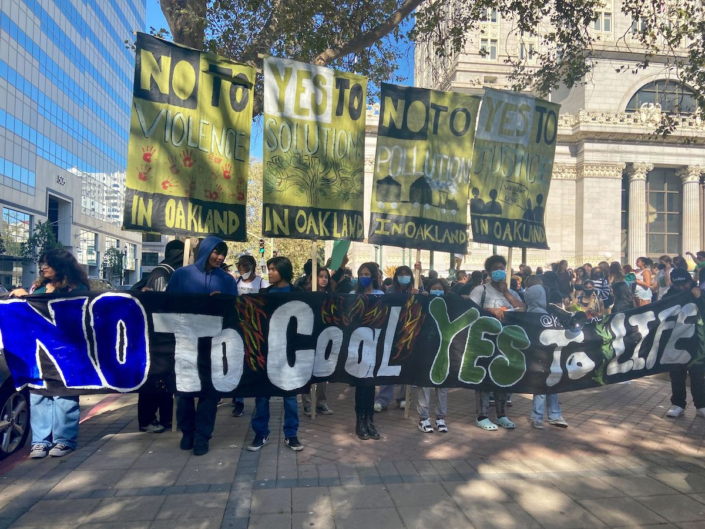

An environmental justice investigation
In West Oakland, the line between who breathes clean and who breathes diesel was drawn on a map eighty years ago — and never erased.
West Oakland sits where three freeways, a major rail corridor, and the Port of Oakland converge. About 25,000 people live here across roughly seven square miles (CARB), and this community is predominantly Black, Latino, and Asian, with a poverty rate more than double that of non-redlined Oakland tracts (CalEnviroScreen 4.0).
About 7,000 diesel trucks move in and out of the Port of Oakland each day, one of the ten busiest container ports in the United States (BAAQMD West Oakland Truck Survey). A 2008 CARB health risk assessment found that residents breathe diesel particulate matter at nearly three times the average Bay Area background level, and truck traffic accounts for about 71% of that risk (CARB).
In the 1930s, the federal Home Owners' Loan Corporation graded neighborhoods across American cities. The areas most commonly deemed "hazardous," which are shaded red on the maps, tended to be overwhelmingly Black, immigrant, and working-class. This distinction caused long-lasting impacts on these communities. For example, lenders used these grades to deny mortgages for decades, concentrating disinvestment in the same communities for generations. West Oakland was almost entirely redlined. But the consequences of that designation didn’t just stop at housing. When a neighborhood was marked hazardous, it also became easier for city planners to route freeways through it through those regions, use them for heavy industry, and ignore residents' complaints regarding pollution and other harmful effects.
The charts below help to make this visible. The bar comparison shows that tracts graded C or D in 1937 carry dramatically higher pollution burdens, lower incomes, and higher proportions of Black and Latino residents than neighborhoods once graded A or B. Furthermore, the dot plot shows that this isn't simply about two separate groups. Instead, every step down the HOLC grading scale corresponds to a step up in pollution exposure today, showing that the harm is systematic and graduated rather than simply incidental.
For such a deep issue, a quick technical fix, such as simply reducing pollution levels, falls short. The disparity wasn't accidental; it was produced by deliberate decisions about which neighborhoods were worth protecting. Therefore, learning about it and addressing it requires confronting both the data and the history and narrative of these marginalized groups.
95 Oakland-area census tracts joined to 1937 HOLC grades. Redlined = HOLC C or D; non-redlined = A or B. Values are population-weighted means across tracts, drawn from CalEnviroScreen 4.0 and ACS 2015-2019.
The redlined / non-redlined split isn't two blobs — it's a ladder. Each dot is one census tract; thick bar is the median, box spans the middle 50%.
Sources: CalEnviroScreen 4.0 × Mapping Inequality. Tract-centroid containment; 29 tracts that fell outside every HOLC polygon are excluded.
Toggle the layers on the map below. The red polygons are the neighborhoods marked "hazardous" in 1937. The heatmap is today's CalEnviroScreen pollution burden.
Sources: Mapping Inequality (Richmond DSL), CalEnviroScreen 4.0 (OEHHA). Click any tract for its percentile and population.
The communities redlined almost ninety years ago are the same ones that absorb the most pollution today. West Oakland's position with freeways, rail lines, and one of the busiest ports in the country is the result of decades of decisions that treated already-marginalized neighborhoods as acceptable places to deal with industrial costs.
The timeline below is a steamgraph depicting how many West Oakland residents in the historically redlined ZIP codes 94607 and 94608 visit the emergency room for asthma related reasons. The data averages emergency department visits per 10,000 residents across the two ZIP codes over the ten-year period of 2013-2023, and is sourced from the California Department of Public Health (CDPH). Data from 2021 and 2022 is unavailable at the source. Each year’s visit rate is rendered as an animated breathing wave, with each expansion symbolizing high visit rates with contractions representing the inverse decline. Visualizing the breathing pattern is intended to immerse the audience into the physical context behind the numbers. The overall trend depicts a significant decline in the visit rate from 134.2 in 2013 to 52 in 2023. The lowest visit rate is marked at 46.8 in 2020, which is a sharp drop from 87.5 in 2019 as a direct result of social distancing and limited check-ups due to the Covid-19 pandemic’s quarantine guidelines. The decline over this decade is a result of resistance from the West Oakland community pushing for policy changes such as the AB 617 Community Plans (signed into law in 2017), strong push for cleaner truck measures, as well as turnover of drayage fleet (heavy-duty trucking units that transport ocean containers and bulk cargo) in the Port of West Oakland. Despite the progress made over this timeframe, even the lowest recent visit rate of 52 from 2023, from these redlined ZIP codes is still twice the amount of the Alameda County average rate. Although policy interventions have assisted undoing environmental harm, the health of the residents within redlined West Oakland neighborhoods are still disproportionately compromised. Their bodies bear the consequences of withering, accumulated from years of diesel exposure and residing within industrial zones. While policy assists with mitigating the severity of injustice, it cannot undo years of withering immediately. The residents of West Oakland recognize this and are actively resisting through grassroots efforts such as the West Oakland Environmental Indicators Project (WOEIP). WOEIP is driving long-term change through community-led programs spanning air quality monitoring, resident-centered health report production, engineering solutions, and youth education.
Asthma-related ED visits per 10,000 residents, ZIP 94607 + 94608 averaged. Source: CDPH / HCAI, 2013–2023. Rates pre-Oct 2015 (ICD-9) are not directly comparable with 2016+ (ICD-10); 2020 reflects pandemic-era ED avoidance; 2021-2022 suppressed at source.
The lung animation below portrays the contrast in breathing patterns between a healthy lung and a lung enduring chronic exposure to diesel particulate matter. The healthy lung on the left represents non-redlined Oakland, while the right lung represents the historically redlined West Oakland ZIP code 94607. The pollution data is sourced from the CalEnviroScreen, which is a statewide instrument that measures pollution by census tract and is compared against the emergency department visit data from CDPH. Similarly to the insights from the breathing timeline, the visualization shows that the non-redlined neighborhoods in Oakland are ranked at the 23rd percentile of pollution burden exposure, while the redlined ZIP code sits at the 90th percentile. This is reflected in the asthma-related ED visits, with the redlined ZIP code (94 visits per 10k) nearly doubling the average number of visits from non-redlined Oakland neighborhoods (46 visits per 10k). Both lungs are breathing at the same rate, but the one exposed to consistent diesel matter absorbs less air content and releases at a much slower pace. Despite both neighborhoods being located in the same city, the quality of life and health outcomes of redlined ZIP code residents is significantly poorer than that of a non-redlined neighborhood. This disparity was systemically executed through redlining via deliberate choices behind urban planning (freeway routes, railways, port operation policies). The lungs and air color (green vs. spotty terracotta) were intentionally chosen as the foundation for the visualization to show the direct health consequences rather than emphasizing quantitative data which may take long to interpret.
What is happening in West Oakland is not a one off; it is an example of the much broader national pattern of environmental injustice shaped by historical policy decisions and structural inequality. Throughout the U.S, communities that were once redlined and marginalized are consistently exposed to higher levels of environmental harm and pollution from contaminated water. The dynamics seen by the port of Oakland (lack of regulatory enforcement, political disinvestment, proximity to industrial infrastructure, etc.) are also seen in places like Flint Michigan, which is a predominantly black community. Louisiana’s “Cancer Alley,” a stretch along the Mississippi River where predominantly Black communities live near a dense concentration of petrochemical plants, the residents experience significantly higher cancer risks due to long-term exposure to industrial emissions, raising urgent questions about how and why these facilities are located where they are. This pattern clearly reveals how environmental risk is not just randomly distributed; Studies have shown that formerly redlined neighborhoods continue to experience worse air quality and poorer health outcomes decades after the policy was outlawed. These enduring disparities demonstrate how past decisions become embedded in present-day landscapes, shaping who breathes clean air and who does not.
Groups like West Oakland Environmental Indicators Project (WOEIP) have played a critical role in ensuring that West Oakland residents are not reduced to statistics. Through localized data collection and advocacy, they center lived experience and push for accountability in environmental policy. These efforts have contributed to increased monitoring of diesel emissions, stronger community health initiatives, and greater public awareness of how port activity affects nearby neighborhoods. At the same time, residents are taking physical, on-the-ground action to reshape their environment. Community organizing has led to efforts to limit diesel truck traffic through residential streets, directly reducing everyday exposure to pollution. Urban greening is another key strategy. Urban Releaf plants and maintains trees in historically under-resourced neighborhoods, improving air quality and cooling streets, while Planting Justice transforms vacant land into community gardens that support both environmental and food justice. These actions are not just responses to harm—they reflect what the community values and envisions. West Oakland is not only a site of inequality, but of resilience, where residents actively reclaim space, build healthier environments, and assert their right to shape the conditions of their lives.
The history below is taken almost line-for-line from a community-led teach-in by HOPE Collaborative, an East Oakland organization that has been running air-quality surveys and an Environmental Justice Cohort for residents (HOPE Collaborative). We reproduce their framing (the dates, the language, the priorities) because the people who breathe this air are also the people who have done the work of writing its history.
The Port begins operating in the late 1920s and remains one of the largest container ports in the country today (Port of Oakland).
Big rigs over four tons are barred from what was then known as MacArthur Boulevard (now I-580). Truck traffic is forced through the Oakland flatlands — exacerbating air pollution in West and East Oakland for decades to come (HOPE Collaborative, "Community Session: Air Quality").
The freeway disrupts a predominantly Black community's economic viability by cutting it off from downtown. Many homes and businesses were destroyed to build it (HOPE Collaborative).
The Port originally opened to cargo flights in 1927; commercial travel didn't begin until 1962. The airport now sees more than 240,000 flights a year and is seeking to expand (Port of Oakland — OAK).
Bay Area Rapid Transit takes over the existing Key System infrastructure. Construction tears down homes across many Oakland neighborhoods (BART).
California codifies the 1951 truck ban into state law, locking in a rerouting pattern that continues to send heavy truck traffic through East and West Oakland's residential streets (Cal. AB 332, 1999).
California's Community Air Protection Program is created to address air-pollution impacts in environmental-justice communities. East Oakland is later named one of 18 priority sites statewide; West Oakland was selected in the program's first year (CARB AB 617).
Smoke from the North Complex Fire settles over the Bay Area on September 9. Skies turn orange; air quality deteriorates to dangerous levels — a preview of what worsening wildfire seasons stack on top of an already-burdened airshed (BAAQMD).
One of East Oakland's longest-running industrial polluters shuts down its century-old foundry, after sustained community pressure and CBE-led organizing (Communities for a Better Environment).
Bay Area Air Quality Management District (BAAQMD) — created by the California Legislature in 1955 as the country's first regional air-pollution control agency. It regulates stationary sources across the nine Bay Area counties, oversees emissions policy, and investigates complaints (BAAQMD). BAAQMD also publishes the Public Data Center, the open dataset behind much of this site's pollution layers.
California Air Resources Board (CARB) — the state's lead air-quality agency. CARB sets statewide emissions standards, leads climate programs, and oversees AB 617 implementation across priority communities (CARB).
Oakland's environmental-justice movement is a network of organizations, many of them led by the residents most directly exposed. The list below is taken from the HOPE Collaborative teach-in (HOPE Collaborative), and it is partial — there are many more.
Air-quality survey and an Environmental Justice Cohort training East Oakland residents in community-based research.
Community Emissions Reduction Plan for East Oakland, lawsuits against polluters, and "Toxic Tours" of Oakland's pollution sites.
Community-greening and neighborhood-led environmental projects in deep East Oakland.
Community education on air quality and environmental health.
Co-founded by Margaret Gordon. Resident-led truck counts, hyperlocal air monitoring, and the negotiations behind AB 617's first community plan.
Urban Releaf, Planting Justice, Youth vs. Apocalypse, and dozens of block-level organizations not in any database.

In 2022, student-led protests against a proposed coal terminal at the former Oakland Army Base drew hundreds into the streets and helped sustain a multi-year fight against fossil-fuel infrastructure on the waterfront (The Oaklandside, 2022). And the model that WOEIP, CBE, and their peers built (community-led air monitoring, resident-authored emissions plans, mandatory state partnership with neighborhood groups) was the template California used when it wrote AB 617. Oakland's organizers helped transform the regulatory culture of the entire state (Trellis).
West Oakland is a neighborhood whose residents have spent decades building the tools (the monitors, the truck-route ordinances, the AB 617 community plans) that the rest of California now uses to understand its own air.
B19013_001E, via the Census Bureau API.data/ holds the exported JSON the page reads.